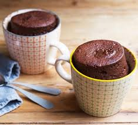

Microaved Cake

Need a quick chocolate fix? Try making this easy microwave mug cake with storecupboard ingredients. It's even more delicious with a scoop of vanilla ice cream
You will need:
- 4 Tbsp Self-Raising Flour
- 4 Tbsp Caster Sugar
- 2 Tbsp Cocoa Powder
- 1 Medium Egg
- 3 Tbsp Milk
- 3 Tbsp Vegetable Oil or Sunflower Oil
- A Few Drops Of Vanilla Essence
How to make:
- Add 4 tbsp self-raising flour, 4 tbsp caster sugar and 2 tbsp cocoa powder to the largest mug you have (to stop it overflowing in the microwave) and mix.
- Add 1 medium egg and mix in as much as you can, but don't worry if there's still dry mix left.
- Add the 3 tbsp milk, 3 tbsp vegetable or sunflower oil and a few drops of vanilla essence and mix until smooth.
- Centre your mug in the middle of the microwave oven and cook on High for 1½ -2 mins, or until it has stopped rising and is firm to the touch.